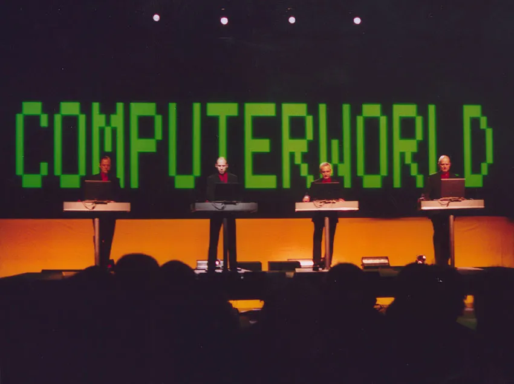
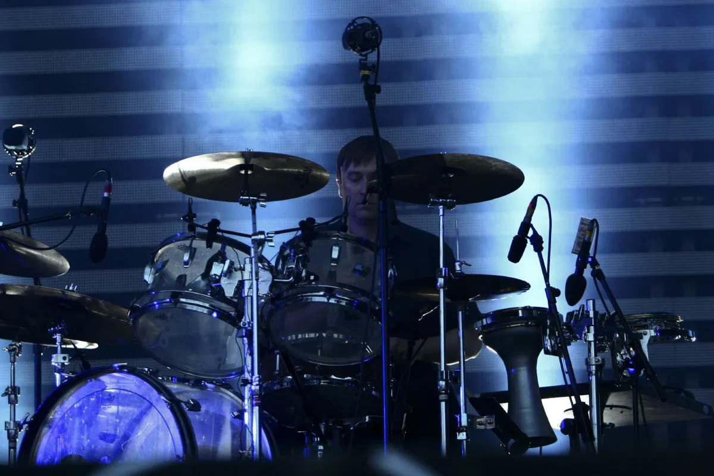
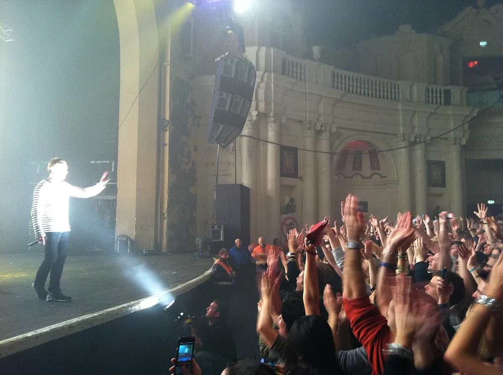
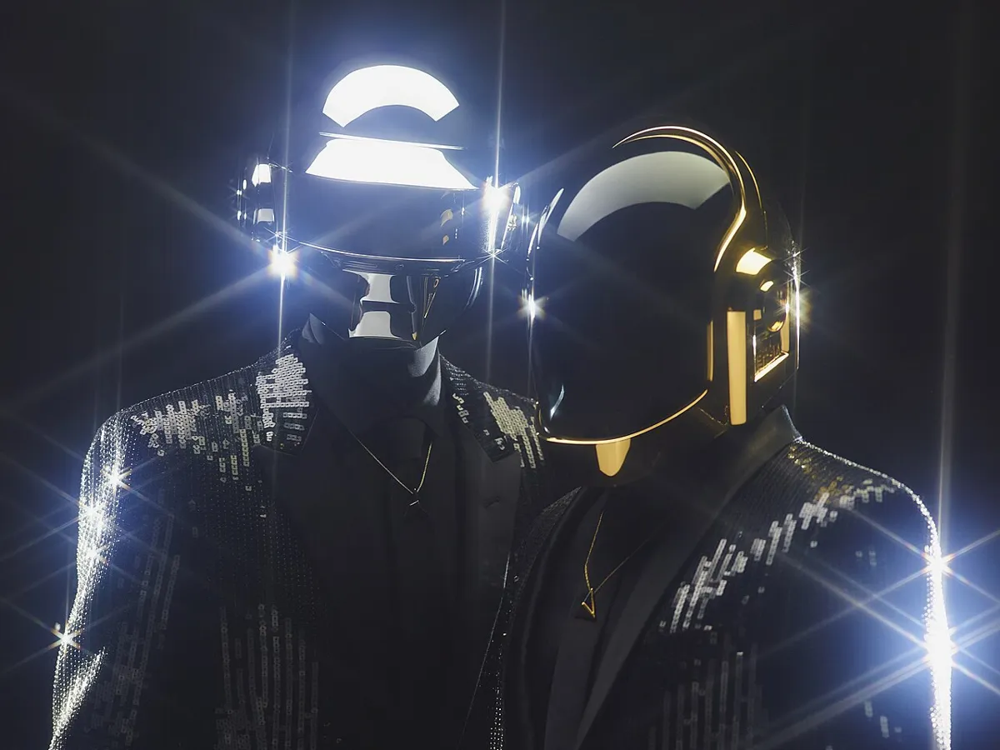

Electronic albums
Best Electronic Albums of All Time
Three published rankings, three different number ones, and sixteen albums counted across them, each with its year, label and placing.
Three lists, three number ones.
The sixteen albums run from 1978 to 2013, taking in ambient music, electronic pop, club records, grime and footwork.
What is the best electronic album ever?
It depends on who is voting. Headphonesty's list is a reader vote among audiophiles, where Oxygène by Jean-Michel Jarre has 8.19% of votes. Slant's 2002 poll asked 300 journalists, DJs and label staff about the twentieth century and put Kraftwerk's Trans-Europe Express first. Resident Advisor's editors covered 2000 to 2025, where Burial's Untrue is number 1.
What the lists do share is a short run of records. Seven albums appear on two lists, and all seven sit in the top fifteen of at least one list. The highest placings are Untrue at number 1 on Resident Advisor, Blue Lines at number 2 on Slant, Selected Ambient Works 85-92 at number 3 and Adventures Beyond the Ultraworld at number 4. No album is on all three, because Slant's poll stops at 2000 and Resident Advisor's list starts there.
What the rankings tell you.
The rankings reflect different audiences and periods. Headphonesty’s 2026 reader vote favours artists such as Jean-Michel Jarre, Daft Punk and Depeche Mode. Slant’s 2002 poll covers the twentieth century; Resident Advisor’s 2025 selection covers 2000 to 2025 and includes EPs and compilations.
Read the placings as a comparison of those perspectives. An album’s absence from a list covering another era says nothing about its quality. The table keeps each publication’s placing separate.
1978 to 1990.
Kraftwerk's The Man-Machine (1978, Capitol) is number 4 on the Headphonesty vote with 6.08%. Slant's number 1 is a different Kraftwerk album, Trans-Europe Express (1977, Capitol).

Brian Eno's Ambient 1: Music for Airports (1978, E'G and Polydor) is number 6 on Slant. Violator by Depeche Mode (1990, Mute, with Sire in the US) is number 3 on Headphonesty with 6.46%, and Slant lists the same band's Music for the Masses at number 20.
1991 to 1995.
Five of the seven shared albums come from these five years. Massive Attack's Blue Lines (1991, Wild Bunch and Virgin) is number 2 on Slant and number 15 on Headphonesty. The Orb's Adventures Beyond the Ultraworld (1991, Big Life) is number 4 on Slant and number 10 on Headphonesty. Aphex Twin's Selected Ambient Works 85-92 (1992, Apollo) is number 3 on Slant and number 22 on Headphonesty.

Underworld's dubnobasswithmyheadman (1994, Junior Boy's Own; Slant dates it 1993) is number 13 on Slant and number 14 on Headphonesty. Leftfield's Leftism (1995, Hard Hands) is number 19 on Slant and number 13 on Headphonesty.

Orbital's second album (1993, Internal), known as the brown album, is number 11 on Slant.
For more glitch, IDM and ambient, the next player features my own No Genre No Problem.
1997 to 2003.
Daft Punk's Homework (1997, Virgin) is number 18 on Slant. Boards of Canada's Music Has the Right to Children (1998, Warp) is on two lists, number 22 on Slant and number 6 on Headphonesty with 4.31% of votes, and Resident Advisor ranks a different Boards of Canada record, the 2000 EP In a Beautiful Place Out in the Country, at number 84.
Daft Punk's Discovery (2001, Virgin) is number 7 on Resident Advisor. Dizzee Rascal's Boy in da Corner (2003, XL Recordings) is number 5.

Daft Punk have an album on each of the three lists: Homework on Slant, Discovery on Resident Advisor and Random Access Memories on Headphonesty.
2007 to 2013.
Burial's Untrue (2007, Hyperdub) is number 1 on Resident Advisor and number 28 on Headphonesty. DJ Rashad's Double Cup (2013, Hyperdub) is number 8 on Resident Advisor. Daft Punk's Random Access Memories (2013, Columbia) is number 2 on Headphonesty with 7.11%.
The next player features my own Late Summer Cloud Dance.
The 16 albums in one table.
| Artist | Album | Year | Label | Placing |
|---|---|---|---|---|
| Kraftwerk | The Man-Machine | 1978 | Capitol | Headphonesty 4 |
| Brian Eno | Ambient 1: Music for Airports | 1978 | E'G, Polydor | Slant 6 |
| Depeche Mode | Violator | 1990 | Mute (Sire in the US) | Headphonesty 3 |
| The Orb | Adventures Beyond the Ultraworld | 1991 | Big Life | Slant 4, Headphonesty 10 |
| Massive Attack | Blue Lines | 1991 | Wild Bunch, Virgin | Slant 2, Headphonesty 15 |
| Aphex Twin | Selected Ambient Works 85-92 | 1992 | Apollo | Slant 3, Headphonesty 22 |
| Orbital | Orbital 2 | 1993 | Internal | Slant 11 |
| Underworld | dubnobasswithmyheadman | 1994 (Slant dates it 1993) | Junior Boy's Own | Slant 13, Headphonesty 14 |
| Leftfield | Leftism | 1995 | Hard Hands | Slant 19, Headphonesty 13 |
| Daft Punk | Homework | 1997 | Virgin | Slant 18 |
| Boards of Canada | Music Has the Right to Children | 1998 | Warp | Slant 22, Headphonesty 6 |
| Daft Punk | Discovery | 2001 | Virgin | Resident Advisor 7 |
| Dizzee Rascal | Boy in da Corner | 2003 | XL Recordings | Resident Advisor 5 |
| Burial | Untrue | 2007 | Hyperdub | Resident Advisor 1, Headphonesty 28 |
| DJ Rashad | Double Cup | 2013 | Hyperdub | Resident Advisor 8 |
| Daft Punk | Random Access Memories | 2013 | Columbia | Headphonesty 2 |
Where to go next.
Explore the scenes behind these albums in the guides to house, techno, trance, UK electronic music and German electronic music. For listening to DJs rather than albums, see the best DJ sets of all time.
Best electronic albums FAQ.
What is the best electronic album ever?
The sources do not agree. Jarre's Oxygène leads the 2026 Headphonesty reader vote, Kraftwerk's Trans-Europe Express leads Slant's 2002 poll, and Burial's Untrue leads Resident Advisor's list for 2000 to 2025. Of the albums on two lists, Blue Lines is placed highest, at number 2 on Slant and number 15 on Headphonesty.
Which electronic albums are on more than one list?
Seven: Music Has the Right to Children, Untrue, Selected Ambient Works 85-92, Blue Lines, dubnobasswithmyheadman, Adventures Beyond the Ultraworld and Leftism.
What is the oldest album here?
Two are from 1978: Kraftwerk's The Man-Machine and Brian Eno's Ambient 1: Music for Airports.
Are these albums ranked against each other?
No. They appear chronologically, with separate placings from Headphonesty, Slant and Resident Advisor so you can compare the publications’ choices.
Sources.
- Headphonesty, 30 Essential Electronic Music Albums According to Audiophiles (August 2026), a reader vote with percentages.
- Slant Magazine, 25/20: the best electronic albums of the twentieth century (30 June 2002, Sal Cinquemani), a poll of 300 journalists, DJs and label staff.
- Resident Advisor, The Best Electronic Records of 2000-25 (2025), 100 records including EPs and compilations.
- MusicBrainz release data.
Continue reading
Read next.
 Festivals~13 min read
Festivals~13 min readWhat Is Burning Man? The Event, the City and the Music
A participant-built city in the Nevada desert, with no central lineup or main stage, and the sound camps and art cars that programme their own music.
Read article → Rave spots~10 min read
Rave spots~10 min readBest Clubs in Berlin: The Legends and the Ones Still Open
The rooms that made Berlin a techno city, the famous clubs that closed, and the best clubs in Berlin that are still open.
Read article → Rave spots~8 min read
Rave spots~8 min readBerghain: Panorama Bar, Sound and Residents
Berghain explained: the former power station, Panorama Bar upstairs, Halle am Berghain, the Kantine, and the Ostgut Ton label.
Read article → Rave spots~6 min read
Rave spots~6 min readBest Clubs in Paris: From Le Palace to Rex Club
Le Palace, Les Bains Douches and Rex Club: the clubs that made Paris nightlife, how each became famous, and the best clubs in Paris open now.
Read article →